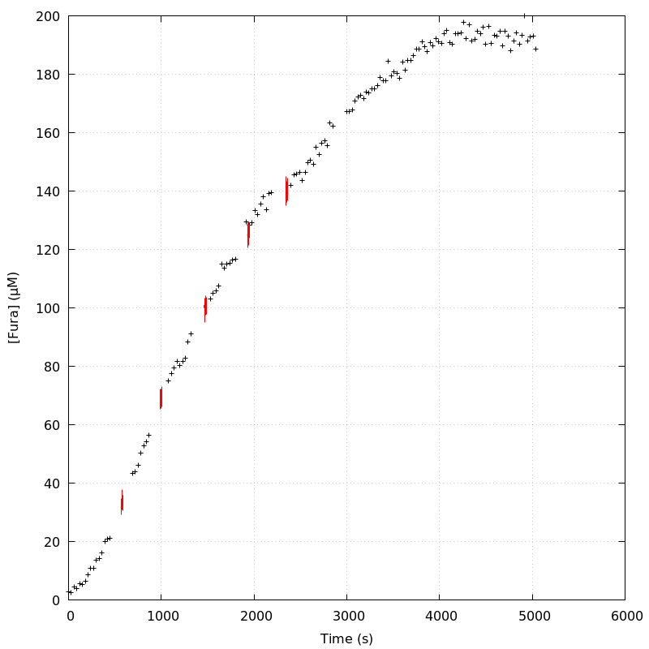
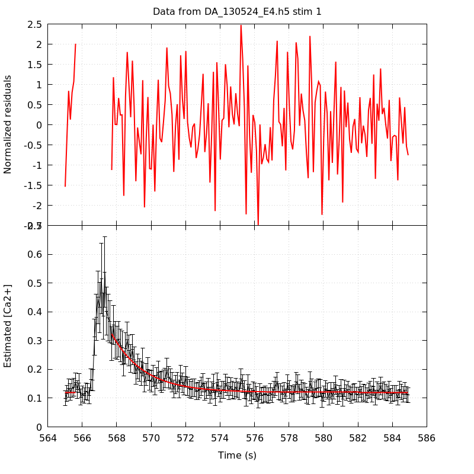
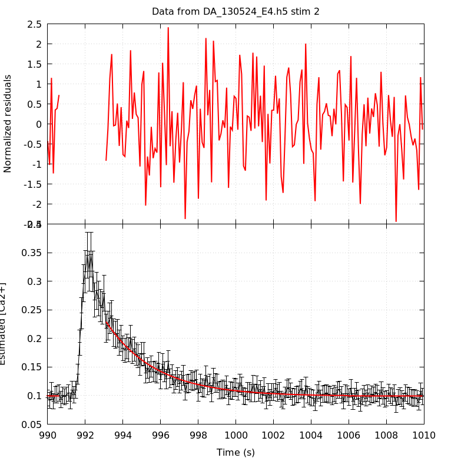
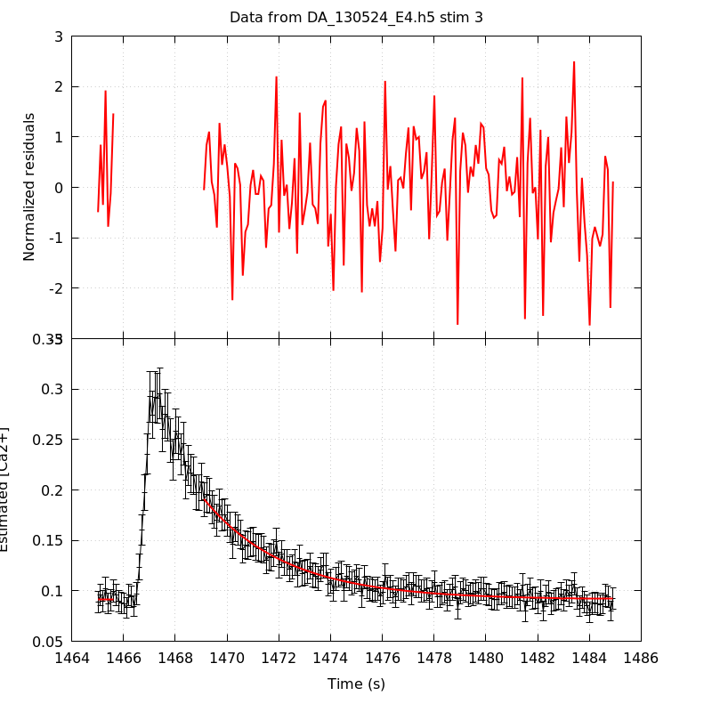
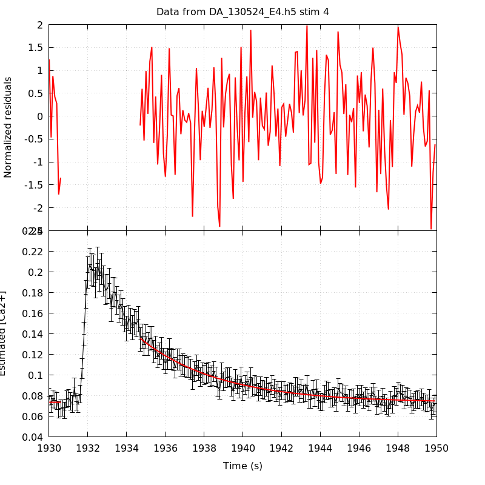
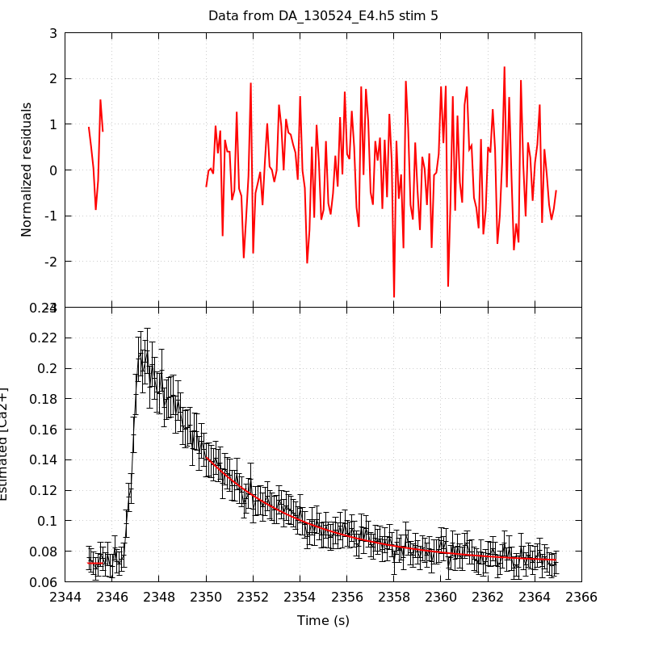
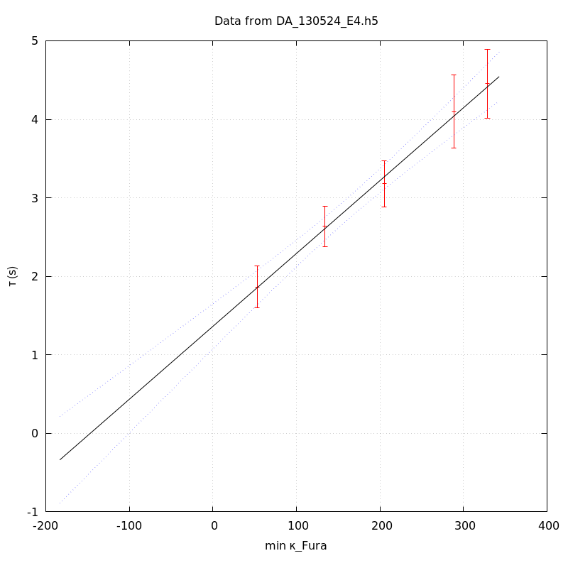
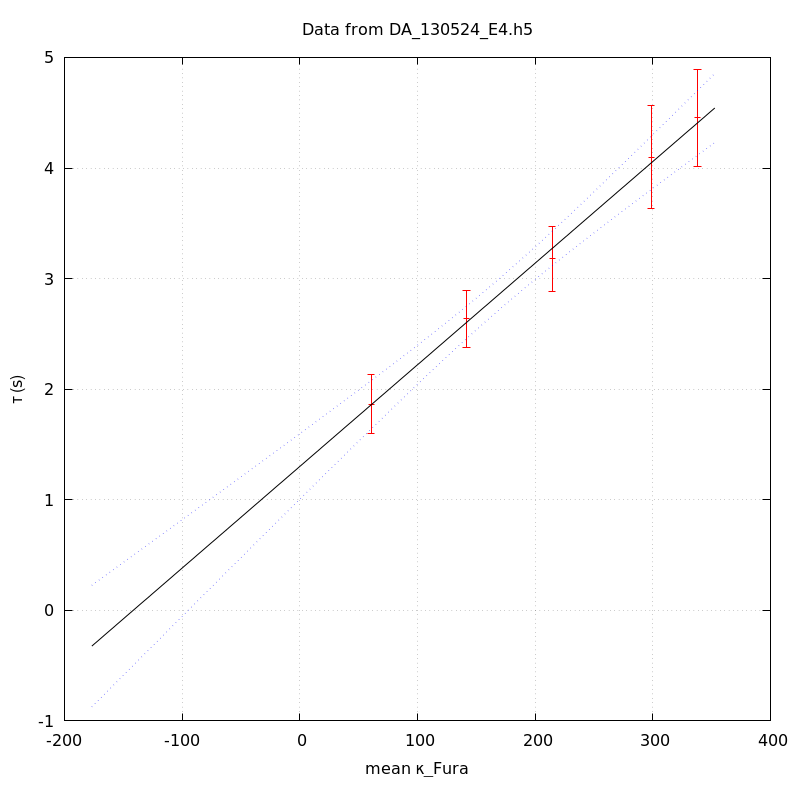
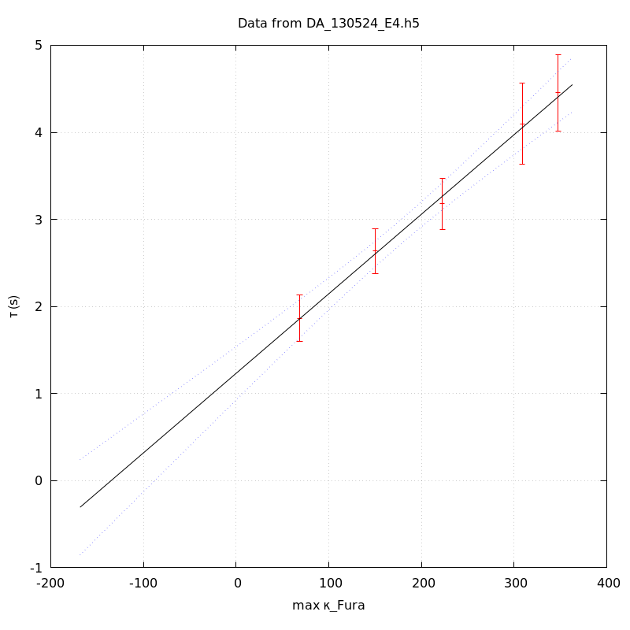

The baseline length is: 7.
When fitting tau against kappa_Fura only the transients for which the fit RSS and the lag 1 auto-correlation of the residuals were small enough, giving an overall probability of false negative of 0.02, were kept (see the numerical summary associated with each transient).
The good transients are: 1, 2, 3, 4, 5.
The time at which the 'good' transients were recorded appear in red.

On each graph, the residuals appear on top. Under the null hypothesis, if the monoexponential fit is correct they should be centered on 0 and have a SD close to 1 (not exactly 1 since parameters were obtained through the fitting procedure form the data.
The estimated [Ca2+] appears on the second row. The estimate is show in black together with pointwise 95% confidence intervals. The fitted curve appears in red. The whole transient is not fitted, only a portion of it is: a portion of the baseline made of 7 points and the decay phase starting at the time where the Delta[Ca2+] has reached 50% of its peak value.
The time appearing on the abscissa is the time from the beginning of the experiment.
Transient 1 is 'good'.

nobs = 180
number of degrees of freedom = 177
baseline length = 7
fit started from point 27
estimated baseline 0.120418 and standard error 0.00142964
estimated delta 0.203002 and standard error 0.0122113
estimated tau 1.86444 and standard error 0.136466
residual sum of squares: 168.033
RSS per degree of freedom: 0.949339
Probability of observing a larger of equal RSS per DOF under the null hypothesis: 0.673391
Lag 1 residuals auto-correlation: -0.016
Pr[Lag 1 auto-corr. > -0.016] = 0.567
Transient 2 is 'good'.

nobs = 176
number of degrees of freedom = 173
baseline length = 7
fit started from point 31
estimated baseline 0.0989784 and standard error 0.000883665
estimated delta 0.130237 and standard error 0.00433949
estimated tau 2.63523 and standard error 0.129955
residual sum of squares: 161.759
RSS per degree of freedom: 0.935025
Probability of observing a larger of equal RSS per DOF under the null hypothesis: 0.719671
Lag 1 residuals auto-correlation: -0.106
Pr[Lag 1 auto-corr. > -0.106] = 0.933
Transient 3 is 'good'.

nobs = 166
number of degrees of freedom = 163
baseline length = 7
fit started from point 41
estimated baseline 0.0914367 and standard error 0.000808395
estimated delta 0.0996035 and standard error 0.00267387
estimated tau 3.17859 and standard error 0.149099
residual sum of squares: 166.096
RSS per degree of freedom: 1.01899
Probability of observing a larger of equal RSS per DOF under the null hypothesis: 0.417908
Lag 1 residuals auto-correlation: -0.028
Pr[Lag 1 auto-corr. > -0.028] = 0.625
Transient 4 is 'good'.

nobs = 160
number of degrees of freedom = 157
baseline length = 7
fit started from point 47
estimated baseline 0.0732924 and standard error 0.000834676
estimated delta 0.0623265 and standard error 0.00165936
estimated tau 4.09915 and standard error 0.239297
residual sum of squares: 142.371
RSS per degree of freedom: 0.906823
Probability of observing a larger of equal RSS per DOF under the null hypothesis: 0.792391
Lag 1 residuals auto-correlation: 0.058
Pr[Lag 1 auto-corr. > 0.058] = 0.166
Transient 5 is 'good'.

nobs = 157
number of degrees of freedom = 154
baseline length = 7
fit started from point 50
estimated baseline 0.071933 and standard error 0.000868446
estimated delta 0.0699027 and standard error 0.00151718
estimated tau 4.45326 and standard error 0.222276
residual sum of squares: 157.141
RSS per degree of freedom: 1.0204
Probability of observing a larger of equal RSS per DOF under the null hypothesis: 0.414606
Lag 1 residuals auto-correlation: -0.005
Pr[Lag 1 auto-corr. > -0.005] = 0.471
Since the [Fura] changes during a transient (and it can change a lot during the early transients), the unique value to use as '[Fura]' is not obvious. We therefore perform 3 fits: one using the minimal value, one using the mean and one using the maximal value.
The observed tau (shown in red) are displayed with a 95% confidence interval that results from the fitting procedure and is therefore meaningful only if the fit is correct!
No serious attempt at quantifying the precision of [Fura] and therefore kappa_Fura has been made since the choice of which [Fura] to use has a larger effect and since the other dominating effect is often the certainty we can have that the saturating value (the [Fura] in the pipette) has been reached.
The straight line in black is the result of a weighted linear regression. The blue dotted lines correspond to the limits of pointwise 95% confidence intervals.

Best fit: tau = 1.36226 + 0.0092821 kappa_Fura
Covariance matrix:
[ +2.14730e-02, -1.00892e-04
-1.00892e-04, +6.22189e-07 ]
Total sum of squares (TSS) = 138.961
chisq (Residual sum of squares, RSS) = 0.486637
Probability of observing a larger of equal RSS per DOF under the null hypothesis: 0.921817
R squared (1-RSS/TSS) = 0.996498
Estimated gamma/v with standard error: 107.734 +/- 9.15522
Estimates kappa_S with standard error (using error propagation): 145.762 +/- 20.119
kappa_S confidence intervals based on parametric bootstrap
0.95 CI for kappa_S: [99.0749,210.066]
0.99 CI for kappa_S: [85.2491,236.73]

Best fit: tau = 1.30117 + 0.00919029 kappa_Fura
Covariance matrix:
[ +2.28371e-02, -1.04002e-04
-1.04002e-04, +6.10252e-07 ]
Total sum of squares (TSS) = 138.961
chisq (Residual sum of squares, RSS) = 0.557261
Probability of observing a larger of equal RSS per DOF under the null hypothesis: 0.906143
R squared (1-RSS/TSS) = 0.99599
Estimated gamma/v with standard error: 108.811 +/- 9.24904
Estimates kappa_S with standard error (using error propagation): 140.581 +/- 20.3768
kappa_S confidence intervals based on parametric bootstrap
0.95 CI for kappa_S: [93.7519,205.438]
0.99 CI for kappa_S: [82.8582,233.076]

Best fit: tau = 1.23205 + 0.00913375 kappa_Fura
Covariance matrix:
[ +2.44271e-02, -1.07874e-04
-1.07874e-04, +6.02492e-07 ]
Total sum of squares (TSS) = 138.961
chisq (Residual sum of squares, RSS) = 0.493891
Probability of observing a larger of equal RSS per DOF under the null hypothesis: 0.920232
R squared (1-RSS/TSS) = 0.996446
Estimated gamma/v with standard error: 109.484 +/- 9.30416
Estimates kappa_S with standard error (using error propagation): 133.89 +/- 20.5963
kappa_S confidence intervals based on parametric bootstrap
0.95 CI for kappa_S: [86.6293,196.916]
0.99 CI for kappa_S: [74.1481,222.736]
5 out of 5 transients were kept.
sigma(tau): 0.136466, 0.129955, 0.149099, 0.239297, 0.222276
Residual correlation at lag 1: -0.015935874746313507, -0.10639203147422062, -0.02798917305770666, 0.05837308899724218, -0.004679496173859197
Probablity of a correlation at lag 1 smaller or equal than observed: 0.567, 0.933, 0.625, 0.16600000000000004, 0.471
RSS/DOF: 0.949339, 0.935025, 1.01899, 0.906823, 1.0204